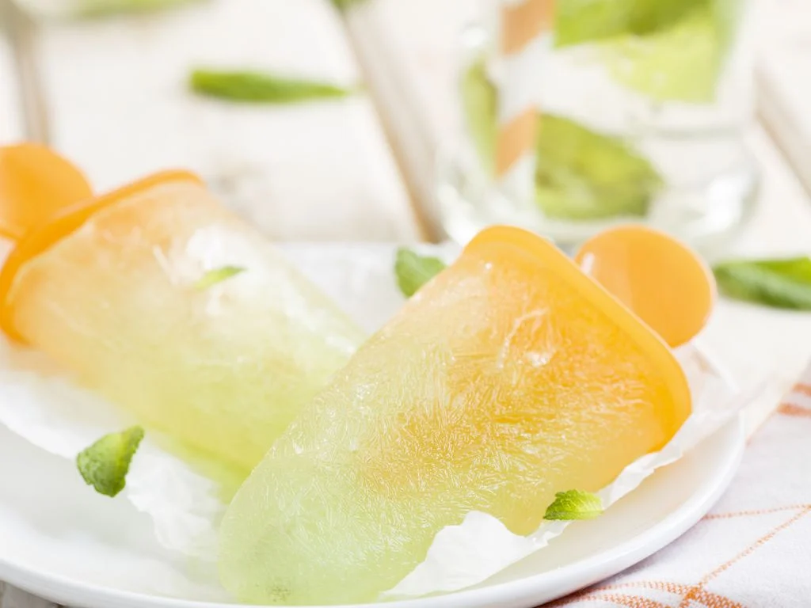

HOME
Popsicle

Description:
Cold and frooty popsicles!
For 6 people
Ingredients:
Steps:
- Prepare: an ice cube tray with sticks, or a special popsicle mold.
- Dilute some syrup with water as you normally would.
- Pour the mixture into your mold (with a stick).
- Place in the freezer for at least 3 hours.
- To remove from the mold:
- – Either gently pull the popsicle out of the mold to avoid breaking it.
- – Or, be more cautious: dip the bottom of the mold in warm water for a short moment, or let it sit at room temperature for 5 minutes before removing.
Other recipes : Cookies or Yogurt cake